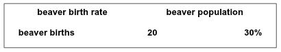

Workbook 1
Modeling Practice (FORM D)
Key Terms & Concepts
A Parameter represents a fixed quantity that never changes. Parameters are used to represent constant values.
Example: pi is a parameter because it is always 3.1415.
An accumulator represents a quantity that increases of decreases over time based on its previous value and the value of its inputs. These take the form: "new value = old value + inputs". It has an initial value that serves as the first "old value".
Example: Population can be an accumulator because its new value is dependent on its old value and its inputs. Current population size = last year's population size + inputs.
A function represents a value that is calculated directly from the values of other quantities, without referencing its previous value. A function differs from an accumulator in that it does not need to know its previous value in order to determine its next value. Thus, a function does not need and does not have a special initial value, whereas an accumulator does.
Example: Suppose you know 20% of the population dies each year, then the number of deaths is a function, namely population * 0.2. Note that the number of the deaths does not require knowledge of the deaths of the previous year to comupte it (if it did, it'd be an accumulator).
Scientific Notation is a great way to rewrite very large and very small numbers. For example, 345000 can be rewritten in scientific notation to be 3.45e+5 or 3.45x105.
To do this, move the decimal place from the end of 345000 in between the first and second number. So, we move the decimal five places to the left between the 3 and the 4. Then we drop the zeros and write e+5, which is an abbreviation for "exponent is +5" or 105. This indicates how many zeroes there are.
Similarly, 0.0000000000000000345 can be rewritten as 3.45e-17 or 3.45x10-17.
Question 1
Suppose you are creating a model of the system described in the italicized paragraph below. Answer the questions below by filling in the blanks from the word bank in the box. Each word (or number) is used once, more than once, or not at all.
You are modeling a population of beavers. There are 20 beavers alive in the first year. Assume that births are the only change in this beaver population (there are no deaths, immigration, or emigration occurring). The number of beaver births each year is 30% of the beaver population.
1a. The "beaver population" is an accumulator whose value is calculated by the following expression: new beaver population = old beaver population +Initial value:
1b. The "beaver birth rate" is a parameter whose value is equal to
1c. "Beaver births" is a function whose value is characterized by the following mathematical expression:
Question 2
Assume you are modeling the system described below in italics.
Enter one option (parameter, accumulator, or function) and fill in the blank:
Brandon has 100 video games.
2a. The number of video games Brandon buys every week is a(n):and is equal to games/week.
2b. The number of video games Brandon has each week is the number of video games he had the preceding week plus the number of games he buys this week. Therefore, the number of video games Brandon has is a(n):
Although your body burns energy at a more-or-less constant amount per day, the amount of energy primitive humans ingested per day varied greatly depending on how lucky they were at hunting and gathering. Thus, humans developed the ability to store energy from food. When there is surplus energy from ingestion, the body stores it as fat and other tissue. When there is too little energy from ingestion, then the body converts fat and other tissues back to energy.
Let's suppose Joe wants to build an accurate model of his weight changes, so he starts with a very simple model, which is that the energy stored (as fat, etc.) changes daily depending on the energy balance. The energy balance is the difference between the energy ingested and the energy burned by the body on that day. When the energy balance is positive on that particular day (a good hunt!), then energy storage increases by the surplus. When the energy balance is negative (a poor hunt), then stored energy decreases.
Joe looks up his current weight in a physiology reference and finds that he has about 345,000 calories stored. To keep things simple while getting started on his modeling project, Joe assumes his energy balance is 100 calories every day. He wants to model how his stored energy increases deaily. Please answer questions below about the model Joe must build.
Question 3
3a. Fill in the blanks.
| Node Name | Type | Description | |
| energy balance | Small surplus per day, value= 100 calories | ||
| energy stored | energy stored in the body is equal to its value yesterday plus energy balance for today, initial value = 245,000 calories |
3b. How would Joe measure changes to his energy storage?
Energy stored =
| time (days) | calculation | energy stored (cal) |
| 0 | N/A | 345,000 |
| 1 | 345,000 + 100 | |
| 2 | 345,100 + 100 | |
| 3 | 345,300 | |
| 4 | 345,400 | |
| 5 |
3c. Joe wants to graph his energy balance. What is the x-axis value (the independent value) and what is the y-axis value (the dependent value)? Write the correct answer on the line and then make a rough graph of it on the plot below.
time
energy stored
Try graphing his weight below using the information from problem 3b.
I need to figure out how to get users to draw on this graph.
The enrgy balance of your body is the difference between the energy you addd to your body by ingesting food and the energy you subtract from your body by physical exercies and other activities. When the energy you ingest exactly equals the energy you expend, the energy balance is zero. When the energy you ingest is greater than the energy you expend, the energy balance is positive, and the excess energy is added to your body's stores. When you consume less energy tha you expend, the energy balance is negative and your body makes up the deficit by withdrawing energy from storage. The energy balance can change every day. Thus, if the energy balance is negative, then the energy stored goes down.
Joe's next model of his energy balance is more complex. It makes energy balance a function of energy ingested and energy expended. Eventually, this will allow hiim to vary them separately. For instance, he can see what happens if he keeps his diet the same (and hence energy ingested is the same as it is now) but he does more exercise (so his energy expended is higher than it is now). However, for now he assumes that his daily expenditure is 2100 calories and his daily ingestion nets him 1989 calories.
Question 4
4a. Fill in the blanks.
| Node Name | Type | Description |
| Energy stored | energy stored in the body is equal to its value yesterday plus energy balance for today, initial value = 345,000 calories | |
| Energy expended | energy expended daily, value = 2100 calories | |
| Energy balance | energy surplus or deficit, value = energy ingested - energy expended | |
| Enrgy ingested | energy ingested daily, value = 1989 calories |
4b. The graph on the left is for the node.
4c. The other graph is for the node.

Almost all the body's energy is stored as tissue, such as fat, muscle, internal organs, and skin. roughly speaking, a pound of tissue stores 3500 calories. Create a model that represents stored energy in Joe's body as his weight in pounds.
Question 5
5a. Fill in the blanks.
| Node Name | Type | Description |
| Energy expended | energy expended daily, value = 1200 calories | |
| Energy balance | Energy surplus or deficit daily, value = energy ingested - energy expended | |
| Energy ingested | energy ingested daily, value = 1989 calories | |
| Weight | The weight of the body as it varies day by day. Its new value is its old value + ; initial value = 160 lbs | |
| Weight change | weight of tissue added or subtracted from storage; value = energy balance/calories per pound | |
| Calories per pound | Number of calories in a pound of tissue, value = 3500 calories/lbs |

5d. Given the two graphs, 5b and 5c, which one goes with the model in the table above? Why?
5e. Suppose Joe ingests 3000 calories a day instead of the 1989 calories a day shown on the table. Which graph would likely go with this situation? Why?
Exactly how much energy is burned by your body depends on many factors, including the amount of physical activity you do, your weight, your age, and other factors. in preparation for describing these effects, scientists divide energy expended into three types:
- energy burned by physical excercise
- energy burned by the digestion process, because it takes energy to release the energy in food.
- energy required just to run all the other bodily functions-- heartbeat, breathing, and so on. This is how much energy you burn if you are doing no exercise and ingesting no food. It is measured while you are lying still, so it is called the "resting energy expenditure" or "resting metabolic rate." It is similar to an older measure, "basal metabolic rate."
Based on his reading of the physiology literature, Joe estimates that his numbers are 400, 1400, and 200 calories, respectively.
Question 6
6a. Fill in the blanks.
| Node Name | Type | Description |
| physical activity expenditure | energy burned by physical exercise; value = 400 calories | |
| resting energy expenditure | energy expended per day by basic body function; value = 1400 calories | |
| digestive activity expenditure | energy burned in order to digest food; value = 200 calories | |
| Energy expended | energy burned by the body in a day; value = physical activity expenditure + resting energy expenditure + |
6b. What is the value of Energy Expended? calories
6c. Assuming Joe continues to ingest 1989 calories a day, will a graph of Joe's weight have a positive or negative slope?
positive negative6d. Suppose Joe ingests 2001 calories a day. Will this graph have a positive or negative slope?
positive negativeThe amount of physical activity energy burned per day depends mostly on two factors: how much exercise you do and your resting energy expenditure. The energy spent on exercise is estimated by multiplying the resting energy expenditure by a physical activity factor, which is:
- 0.2 for little or no exercise
- 0.375 for light exercise
- 0.55 for moderate exercise
- 0.75 for hard exercise but not every day
- 0.9 for daily hard exercise
Instead of using a parameter for "physical activity expenditure" with a value of 400, Joe decides to make it a function whose value is the product of resting energy expenditure and a new node, physical activity level. Joe does little exercise, so he sets the physical activity level as 0.2. However, his model is now set up so that he can easily see the effect of increasing his exercise level. Here's his whole model, expressed as a table. Fill in the blanks:
| Node Name | Type | Description |
| Energy balance | Function | Energy surplus or deficit daily, value = energy ingested - energy expended |
| Energy ingested | Parameter | energy ingested daily, value = 1989 calories |
| Weight | Accumulator | The weight of the body as it varies day by day. Its new value is its old value + weight change; initial value = 150 lbs |
| Weight change | Function | weight of tissue added or subtracted from storage; value = 3500 calories/lbs |
| Calories per pound | Parameter | number of calories in a pound of tissue, value = 3500 calories/lbs |
| physical energy expenditure | energy burned by physical exercise; value = * | |
| resting energy expenditure | Parameter | energy expended per day by basic bodily function; value = 1400 calories |
| digestive energy expenditure | Parameter | energy burned in order to digest food; value = 200 calories |
| Energy expended | function | energy burned by the body in a day; value = physical activity expenditure + resting energy expenditure + |
| Physical activity level | Amount of physical activity, e.g. 0.2 for little or no exercise, 0.9 for daily hard exercise. |
Question 7
7a. Assuming Joe is sedentary, and his physical exercise level is 0.2, what is his daily energy expenditure?
7b. If he still ingests 1989 calories a day, does he gain weight or lose weight?
gain lose7c. How much, in pounds per day?
7d. Joe wonders what would happen if he really increased his daily exercise, so that his physical activity level was 0.9. What would this make his snergy expenditure?
7e. If he continued to eat 1989 calories a day, would he gain or lose weight?
gain loseHow much, in pounds per day?
The more food you eat, the more energy it takes to digest it. The expression "thermic effect of food" is used to describe the energy expended by our bodies to consume (bite, chew, and swallow) and process (digest, transport, metabolize, and store) food.
A factor of 10% is generally used to account for the thermic effect of food. Thus, if you eat 500 calories of food, you will expend 50 calories processing it. However, this is only a rough estimate, because the factor is different for different foods. Processing protein requires the greatest expenditure of energy, with estimates ranging as high as 30%. Dietary fat, on the other hand, is so easily processed and turned into body fat that there is little thermic effect, perhaps only 2% or 3%. The amount of energy required to process carbohydrates falls between that of protein and fat.
Since we don't know much about Joe's diet, let's just use the default value of 10%. In the table below, which shows the complete model that Joe has developed so far, fill in the blanks to change the node "digestive energy expenditure" to be the product of "energy ingested" and a parameter "digestive energy factor" with the value 0.10.
| Node Name | Type | Description |
| Energy balance | Function | Energy surplus or deficit daily, value = energy ingested - energy expended |
| Energy ingested | Parameter | energy ingested daily, value = 1989 calories |
| Weight | Accumulator | The weight of the body as it varies day by day. Its new value is its old value + weight change; inital value = 150 lbs |
| Weight change | Function | weight of tissue added or subtracted from storage; value = energy balance/calories per pound |
| Calories per pound | Parameter | Number of calories in a pound of tissue, value = 3500 calories/lbs |
| physical activity expenditure | Function | energy burned by physical exercise; value = * | resting energy expenditure | Parameter | energy expended per day by basic bodily function; value = 1400 calories |
| digestive activity expenditure | energy burned in order to digest food; value = * | |
| Energy expended | Function | energy burned by the body in a day; value = physical activity expenditure + resting energy expenditure + |
| Physical activity level | Parameter | Amount of physical activity, e.g., 0.2 for little or no evercise, 0.9 for daily hard exercise |
| Digestive energy factor | The proportion of ingested energy that is required to process it, value = |
Question 8
8a. Joe is still eating 1989 calories a day and still sedentary (physical activity level = 0.2), so what is his digestive activity expenditure per day?
8b. Now if he doubles his food intake, so his daily ingested energy is 4000 calories, then his digestive activity expenditure is
which is more than his physical activity expenditure, which is still
8c. What is his total energy expenditure?
Does he gain or lose weight?
gain loseHow much, in pounds per day?
The resting energy expenditure, which is measured when you are doing no exercise and no ingestion of food, includes the energy used for breathing, blood circulation, and many other routine bodily functions. The bigger the body, the more energy these bodily functions require. However, young bodies burn more energy per pound than old bodies. The Mifflin equation, shown below, is the most accurate estimator known so far:
- REE = 4.5*weight + 15.9*height - 5*age + gender REE
where:
- REE is resting energy expenditure
- gender REE is 5 for men and -161 for women
- weight is in pounds
- height is in inches
- age is in years
In Joe's model below, modify the node for "resting energy expenditure" to implement this equation by filling in the blanks. Assume Joe is a 20-year-old, 65-inch-tall male.
| Node Name | Type | Description |
| Energy balance | Function | Energy surplus or deficit daily, value = energy ingested - energy expended |
| Energy ingested | Parameter | energy ingested daily, value = 1989 calories |
| Weight | Accumulator | The weight of the body as it varies day by day. Its new value is old value + weight change; initial value = 150 lbs |
| Weight change | Fucntion | Weight of tissue added or subtracted from storage; value = energy balance/calories per pound |
| Calories per pound | Parameter | Number of calories in a pound of tissue, value = 3500 calories/lbs |
| physical activity expenditure | Function | energy burned by physical exercise; value = resting energy expenditure * physical activity level |
| resting energy expenditure | energy expended per day by basic bodily function; value = -+ | |
| digestive activity expenditure | Function | energy burned in order to digest food; value = energy ingested * digestive activity expenditure |
| Energy expended | Function | energy burned by the body in a day; value = physical activity expenditure + resting energy expenditure + digestive activity expenditure |
| Physical activity level | Parameter | Amount of physical activity, e.g., 0.2 for little or no exercise. 0.9 for daily hard exercise |
| Digestive energy factor | Parameter | The proportion of energy that is requied to process it, value = 0.10 |
| weight REE | Contribution of weight to REE, value = weight * weight REE multiplier | |
| weight REE multiplier | Amount of REE per pound of weight, value = 4.5 calories/pound | |
| height REE | Contribution of height to REE, value = height * height REE multiplier | |
| height REE multiplier | Amount of REE per inch of height, value = 15.9 calories/inch | |
| height | Joe's height in inches, value = 65 inches | |
| age REE | Contribution of age to REE, value = age * age REE multiplier | |
| age REE multiplier | Amount of REE per year of age, value = 5 calories/year | |
| age | Joe's age in years, value = 20 years | |
| gender REE | Contribution of gender to REE, value = 5 for men and -161 for women. |